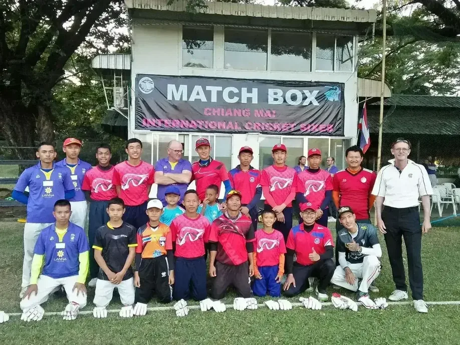

Cricket at Gymkhana
Premier cricket grounds in Thailand's sporting heartland

Cricket in Thailand & Chiang Mai
Cricket was introduced to Thailand by the children of elite Thai families who received their education in England. The game took root in Bangkok and eventually established itself as a significant sporting tradition in Chiang Mai, where the Gymkhana Club has played a central role in developing and promoting the sport.
The Chiang Mai Gymkhana Club cricket grounds have become one of Thailand's premier cricket venues. Our facilities host regular club matches, regional tournaments, and international cricket events. The cricket community at Gymkhana spans all experience levels and backgrounds, united by a shared love of the game.
Cricket at the club reflects the sport's deep traditions while welcoming new players to learn and enjoy the game. Whether you are a lifelong enthusiast or discovering cricket for the first time, the Gymkhana community provides an ideal environment for competitive and social cricket.

Cricket Facilities
The club maintains premier cricket grounds suitable for both friendly matches and serious competitive play. The pitches are prepared and maintained to professional standards, ensuring fair and consistent playing conditions throughout the season.
Our facilities include full ground amenities including pavilion facilities, seating areas, and spectator accommodations. The setting combines excellent playing conditions with the natural beauty of Chiang Mai's tropical landscape.

Club Matches & Tournaments
The Chiang Mai Gymkhana Club cricket season is marked by regular club matches that bring together members of all abilities. Fixtures range from friendly casual matches to structured league competitions, providing opportunities for players to enjoy cricket in a welcoming and inclusive environment.
Beyond internal club matches, Gymkhana competes in regional tournaments and hosts visiting teams from other cricket clubs. These events showcase the quality of cricket at our grounds and strengthen the bonds within Thailand's cricket community.
Members interested in cricket are encouraged to contact the club office about playing opportunities, coaching, and upcoming fixtures. Whether you seek regular competitive play or occasional friendly matches, there is a place for you in Gymkhana cricket.
Cricket in Thailand
Cricket was introduced to Thailand by the children of elite Thai families who learnt the game during education in England. They founded the Bangkok City Cricket Club in 1890, and the side played its first game in November of that year at Pramane Ground (Sanam Luang) situated near the Royal Palace. Cricket among the Thai community failed to develop, however, and by the early 1900s the game was confined almost entirely to expatriate residents.
Cricket in Chiang Mai
Cricket in Chiang Mai was first referred to in the Minutes of the newly formed Gymkhana Club Committee meeting of November 6, 1898, where it was mentioned "that a well be sunk some 15 ft in depth near the cricket ground." In the following year at the Sports Committee Meeting on November 10, 1899, cricket was included in the Christmas Meeting 1899 Programme together with many other activities. Although it is generally considered that the Gymkhana Club were first to organize cricket in the Kingdom, that distinction would seem to belong to the now defunct Bangkok City Cricket Club.
The Dick Wood Trophy
British Club have been travelling from Bangkok to Chiang Mai for 33 years and their annual cricket match against Gymkhana Club, in which the two historic clubs compete for the Dick Wood Cup, is one of the sporting events of the year. The match reflects the deep traditions of cricket in Thailand and the enduring rivalry between these two historic institutions.
The 2016 match played on 31st January was one of the most high-scoring contests between the two sides. Gymkhana Club won by 32 runs in a thrilling encounter, as the match was never safe until the last wicket had been claimed. Captain Dale returned to the crease and finished on 63 not out, playing a crucial role in Gymkhana's victory. The presentation was highly entertaining as the Dick Wood Cup was presented to home captain Pete Warner. It was a wonderful weekend of cricket at Gymkhana Club as the memory of Dick Wood lives on.
Chiang Mai Champions in Chanthaburi
Chiang Mai's cricketers were delighted as they won both the men's and women's events in March at Chanthaburi in the 31st meeting of Thailand's National Youth Games. The annual event features the country's best U-19 athletes across 40 disciplines and participation, let alone success, is quite a stimulus to a young person's career. These victories demonstrate the quality of cricket development in Chiang Mai and the strong tradition of youth participation in the sport.
Cricket Captain & Leadership
David Walker has been living in Chiang Mai since 2002 when he joined the club and became involved in the cricket section, having been a player most of his life. Although not playing anymore, he is still heavily involved with the coaching of Thai children and most things cricket-related that involve Chiang Mai and the Gymkhana Club.
David's dedication to developing young talent and maintaining the traditions of cricket at Gymkhana reflects the club's commitment to nurturing the next generation of Thai cricketers while preserving the sport's rich heritage in northern Thailand.
Play Cricket at Gymkhana
Join Thailand's finest cricket community in the heart of Chiang Mai
Get In Touch